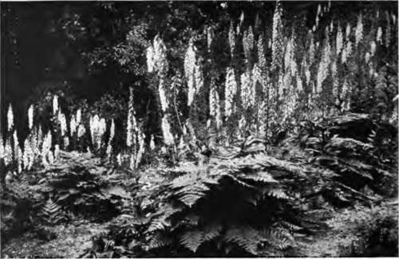

The Special Value Of Perennials. Part 3
Description
This section is from the book "Flower Gardening", by H. S. Adams. Also available from Amazon: Flower gardening.
The Special Value Of Perennials. Part 3
Such a temporary use of perennials within the limits of parterre formality and the set designs of park flower beds is quite common in England.
The example is one that might well be emulated in the United States, where, aside from the most familiar bulbs, it is rare to see any plants but pansies, English daisies, arabis and forget-me-not bedded out in spring. There is a long list to choose from, without touching the doubtful flower such as various kinds of ranunculus and anemone.
It is not an expensive form of gardening, if one has the time for the additional labor required. Seed of perennials does not cost a great deal and as soon as a stock is started, propagation by cuttings uses up no money and very little time.
When seed is purchased, secure the very best obtainable. This costs more, but is worth every bit of the difference. Americans are apt to imagine that they are paying a high price for seed when they exchange a dime for a packet and to regard a nickel as a sort of standard price. The English, on the other hand, think nothing of paying the equivalent of twenty-four, thirty-six and forty-eight cents a packet; they know what superior seed means and the choicest is never too good.
Seed is the best means of securing some of the perennials that are not in the American trade. Not only is the risk of importing plants done away with, but specimens born here are better fitted to stand the climate. One of the few American alpine gardens of importance has been thus stocked. Aside from this, the question of using seed depends a great deal on circumstances. It is the quickest way of getting a considerable quantity of larkspur, Iris pseudo-acorus, aubrietia, Baptisia australis, blackberry lily (Pardanthus sinensis), oriental poppy, Amsonia Tabernaemontana, the maiden pink (Dianthus deltoides) and some of the primulas, to name only a few perennials, while it is a very slow way to accumulate herbaceous peonies The only thing to go by is a knowledge of habit, which varies greatly in the length of time required for germination as well as for the attainment of the capacity of blooming; it is often difficult to get the seed of trollius and Genu ana acaulis to germinate until its second spring underground. Creeping and prostrate plants commonly send out a large number of shoots that root readily and, indeed, often strike root before being attached.
Naturalistic arrangements take on a grace and beauty—a final touch of both—that is lacking in formality of set designs.
All of the spring-blooming phloxes, arabis, doron-icum, Polemonium reptans, the ajugas, the veronicas and the stonecrops are readily propagated in this wise. Others, like the primulas and dropwort, cannot be grown from cuttings; they form crowns that are easily pulled apart. Cuttings may be taken of Phlox paniculata, and it grows quickly from seed, but for ordinary purposes the best plan is to separate the roots. Large clumps may be safely cut with the edge of a spade and the same is true of Tradescantia virginica, the funkias, hermero-callis, Siberian and Japanese iris and all perennials that form a mass of roots so closely bound together that division by hand is out of the question.
There need be no fear of taking cuttings, within reasonable bounds, or of much subdividing; both are good for perennials, which, it must not be forgotten, occasionally thrive more luxuriantly in the garden than in their native haunts. Separate every few years; or every year, if conditions seem to warrant it. This for the majority of perennials; divide peonies every seventh year and let frax-inella and the everlasting pea alone indefinitely unless a transfer is absolutely necessary.
It is a custom, but one altogether too infrequent, to plant some of the perennials—generally grown from seed—in pots. This seems to be the only way to get perfection out of the chimney bell-flower (Campanula pyramidalis). In pots the spikes of blue or white blossoms will shoot up five or six feet and there is nothing more beautiful for an early summer decorative change in the conservatory or for a porch or hall plant. All of the hardy primulas, but more particularly the English, Cashmere and Siebold primroses, the giant cowslip, the polyanthus and the border auricula, are remarkably handsome little pot plants for March and April indoors. The choicer pyreth-rums, trollius, Phlox divaricata and many of the alpines are quite as handsome in their way. All of the plants may be set out in the garden after blooming, though the chimney bellflower is generally treated as a biennial and thrown away after blooming.
There are two more uses for potted perennials. One is to keep a reserve store for filling gaps in the garden and the other is to solve the problem of those perennials, including some bulbous and tuberous plants, that are unreliably hardy if at all.
Among the latter are several of the loveliest wind-flowers—Anemone sylvestris, A. blanda, A. St. Brigid and A. fulgens; the turban and Lebanon ranunculus and Rehmannia angulata. These, as well as the various hellebores known as Christmas and Lent roses—which, if they survive the winter in the open, do not always bloom satisfactorily in December, January and March—may be grown in pots sunk in ashes in a tight coldframe or kept cool indoors until brought out to bloom.
Some perennials hold strictly to species. Others have a perplexing number of varieties, the peony, Phlox paniculata, pyrethrum and larkspur running up into hundreds, and the original type may be lost altogether in cultivation. Where there is a choice of varieties, seek out the best. There is the greatest difference in the world, as to both size and color of bloom, between the best of the peonies, phloxes, pyrethrums and larkspurs and those that are neither bad nor yet very good. And of the best select not many kinds; a dozen plants each of the lovely new double pale pink pyrethrum Queen Mary and as many more of that admirable double white, Carl Vogt, make a much finer showing than a mixture of two each of twelve varieties.
So, too, a massing of the Festiva Maxima peony or the old-fashioned red "piny" is better than the same number of plants in varied assortment, while Phlox paniculata loses half its effectiveness when there is not a generous grouping of one kind.
Not only be chary of varieties in the hardy garden and borders, but use the same restraint as to the multiplication of species. The wonderful big notes are struck by solid effects such as are to be found in nature. Bring your stock of Phlox divaricata—the type color—or Alyssum saxatile up to one hundred plants, which is easily done in a few years. Set them out in a long, narrow drift of each and the point will be plainly apparent. This course does not call for the slighting of other desired perennials; they can be grouped as fillers, or used in the reserve garden and odd spots on the place. Often space by the south or east wall of a barn may be used for colonizing perennials not required for the garden. They make a fine show there because of the isolation and are always handy for cutting.
Perennials are the cheapest of all plant investments, everything considered. Most of them increase so rapidly that in a few years the result makes the money laid out seem ridiculously small. A large number of the commonest kinds may be had at fifteen cents each—less by the dozen or hundred. Novelties and rarities are seldom more than half a dollar in this country. In England all kinds of high prices are paid willingly; some of the 1912 novelties were $24 each.
Continue to:
- prev: The Special Value Of Perennials. Part 2
- Table of Contents
- next: Chapter XII. The Best Uses Of Annuals